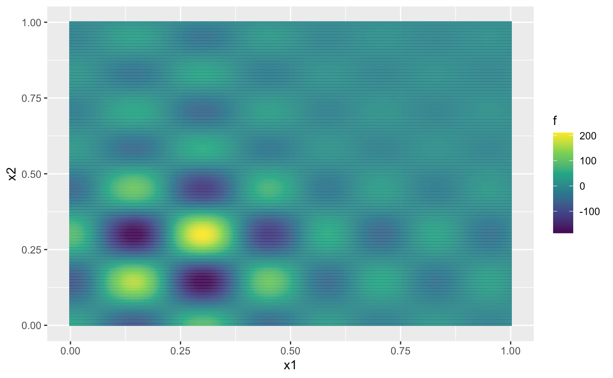
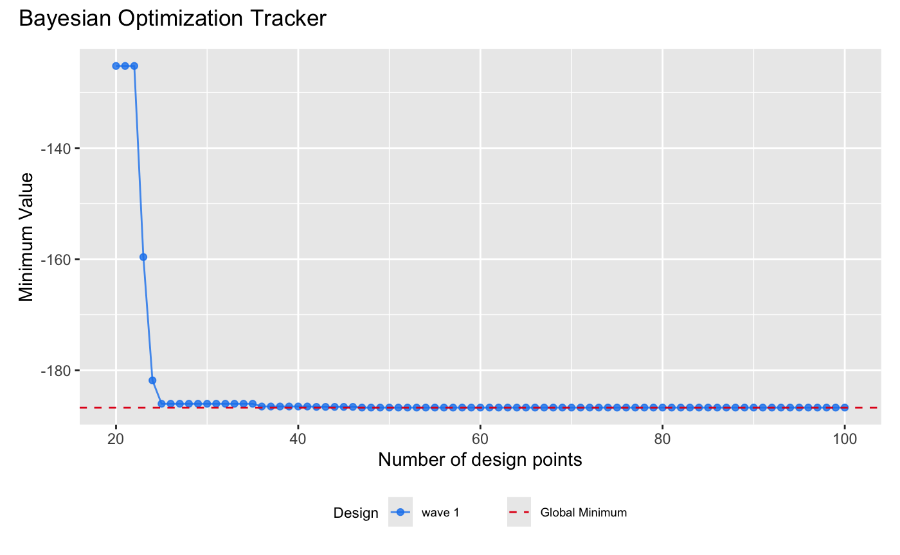
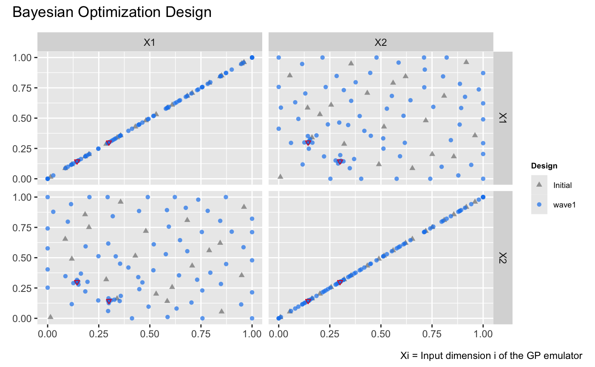

This vignette demonstrates how to utilize and repurpose the
design() function in dgpsi to implement
Bayesian optimization using the (D)GP surrogate models provided by the
package.
Define the target function
We consider a version of the Shubert function (Surjanovic and Bingham 2013) defined over the domain as follows:
shubert <- function(x)
{
N <- nrow(x)
x1 <- x[,1] * 4 - 2
x2 <- x[,2] * 4 - 2
ii <- c(1:5)
y <- sapply(1:N, function(i) {
sum(ii * cos((ii+1)*x1[i]+ii)) * sum(ii * cos((ii+1)*x2[i]+ii))
})
y <- matrix(y, ncol = 1)
return(y)
}To pass the Shubert function to design(), we defined it
such that both its input x and output are matrices. Next,
we generate the contour of the Shubert function:
x1 <- seq(0, 1, length.out = 200)
x2 <- seq(0, 1, length.out = 200)
dat <- expand_grid(x1 = x1, x2 = x2)
dat <- mutate(dat, f = shubert(cbind(x1, x2)))
ggplot(dat, aes(x1, x2, fill = f)) + geom_tile() +
scale_fill_continuous(type = "viridis")
From the figure above, we can observe that the Shubert function has several local minima and two global minima located at (0.1437, 0.2999) and (0.2999, 0.1437), both with values around -186.7309. In the remainder of this vignette, we will use Expected Improvement (EI) as the acquisition function to identify the global minima.
Initial emulator construction
To ensure the reproducibility of this vignette, we set a seed using
the set_seed() function from the package:
set_seed(99)Next, we generate an initial design of 20 points using the maximin Latin hypercube sampler:
X <- maximinLHS(20, 2)
Y <- shubert(X)to construct the initial DGP surrogate model of the Shubert function:
m <- dgp(X, Y, name = 'matern2.5')## Auto-generating a 2-layered DGP structure ... done
## Initializing the DGP emulator ... done
## Training the DGP emulator:
## Iteration 500: Layer 2: 100%|██████████| 500/500 [00:02<00:00, 249.19it/s]
## Imputing ... doneBayesian optimization using Expected Improvement (EI)
To begin Bayesian optimization with design(), we first
need to define the Expected Improvement (EI) acquisition function,
adhering to the rules specified for the method argument in
design():
ei <- function(object, limits, n_starts = 10, ...) {
# Expected Improvement (EI) function
ei_function <- function(x) {
x <- matrix(x, nrow = 1)
# Extract mean and variance from the 'object'
pred <- predict(object, x, ...)$results
mu <- pred$mean
sigma <- sqrt(pred$var)
# Handle numerical precision issues with very small sigma values
sigma[sigma < 1e-10] <- 1e-10
# Best observed minimum value
best_value <- min(object$data$Y)
# Calculate improvement
improvement <- best_value - mu
# Calculate Expected Improvement (EI)
z <- improvement / sigma
ei <- improvement * pnorm(z) + sigma * dnorm(z)
ei <- ifelse(ei < 1e-10, 0, ei) # Ensure non-negative EI
return(-ei) # Return negative EI because `optim()` minimizes by default
}
# Number of input dimensions
num_dims <- nrow(limits)
# Generate initial points using Latin Hypercube Sampling (LHS)
lhd_samples <- maximinLHS(n_starts, num_dims)
lhd_points <- sapply(1:num_dims, function(i) {
limits[i, 1] + lhd_samples[, i] * (limits[i, 2] - limits[i, 1])
})
# Perform optimization with multiple starts using `optim()`
results <- lapply(1:n_starts, function(i) {
optim(
par = lhd_points[i, ],
fn = ei_function,
method = "L-BFGS-B",
lower = limits[, 1],
upper = limits[, 2]
)
})
# Find the result with the minimum (most negative) EI
best_result <- results[[which.min(sapply(results, `[[`, "value"))]]
# Return the next best point `x` as a single-row matrix
return(matrix(best_result$par, nrow = 1))
}The ei function defined above takes the emulator as its
first argument, object, along with the additional
arguments: limits, a two-column matrix where the first
column specifies the lower bounds and the second column specifies the
upper bounds of the input dimensions, and n_starts, which
defines the number of multi-start points used to search for the location
corresponding to the minimum (most negative) EI. You can, of course,
replace ei with your own acquisition function, provided it
adheres to the rules of the method argument in
design() (see ?design for details).
To track the identified minimum value of the Shubert function during
Bayesian optimization, we define a monitor function,
opt_monitor, to be passed to the eval argument
of design():
The domain of the input for the Shubert function, within which the global minima are searched by the Bayesian optimization, is defined as :
With all the ingredients ready, we can now run the Bayesian
optimization using design() with 80 iterations:
m <- design(m, N = 80, limits = lim, f = shubert, method = ei, eval = opt_monitor)## Initializing ... done
## * Metric: -125.203479
## Iteration 1:
## - Locating ... done
## * Next design point: 0.352375 0.142570
## - Updating and re-fitting ... done
## - Validating ... done
## * Metric: -125.203479
##
## ...
##
## Iteration 6:
## - Locating ... done
## * Next design point: 0.299327 0.125593
## - Updating and re-fitting ... done
## - Transiting to a GP emulator ... done
## - Validating ... done
## * Metric: -186.041431
##
## ...
##
## Iteration 80:
## - Locating ... done
## * Next design point: 0.333064 0.511119
## - Updating and re-fitting ... done
## - Validating ... done
## * Metric: -186.727548During the Bayesian optimization, our dynamic pruning mechanism
transitioned the DGP emulator to a GP emulator at iteration 6, leading
to faster optimizations in the remaining iterations while maintaining
the emulator’s quality. After 80 iterations, we identified a minimum of
the Shubert function with a value of -186.7275, which is very close to
the global minimum of -186.7309. We can inspect the progress of the
minima search conducted by design() by applying
draw() to m:
draw(m) +
plot_annotation(title = 'Bayesian Optimization Tracker') +
labs(y = "Minimum Value") +
# Add a horizontal line to represent the global minimum for benchmarking
geom_hline(
aes(yintercept = y, linetype = "Global Minimum"), # Global minimum
data = data.frame(y = -186.7309),
color = "#E31A1C",
linewidth = 0.5
) +
scale_linetype_manual(
values = c("Global Minimum" = "dashed"),
name = "" # Remove the legend title
)
The figure above shows that Bayesian optimization using our (D)GP
emulator quickly identifies a low value of the Shubert function within 5
iterations. Notably, the lowest value, -186.7275, was achieved by
design() after 71 iterations.
We can also inspect the locations identified during the process by
applying draw() to m with
type = 'design':
draw(m, type = 'design') +
plot_annotation(title = 'Bayesian Optimization Design') +
# Highlight the global minima on the design plot
geom_point(
data = data.frame(
.panel_x = c("X1", "X2"), # x labels of panels
.panel_y = c("X2", "X1"), # y labels of panels
X1 = c(0.1437, 0.2999), # X1 values for the global minima
X2 = c(0.2999, 0.1437) # X2 values for the global minima
),
aes(x = .panel_x, y = .panel_y),
size = 1.25,
shape = 6,
color = "#E31A1C"
)
The figure above illustrates that Bayesian optimization successfully identifies the regions around the two global minima, represented as red inverted triangles, by adding design points concentrated near these two locations.